(2007-04-10 15:23:46)
【韶山映山红】本课已经记录阿娇＼桃花博客注解和配图。】
【韶山映山红】桃花博客：（本课文讲解为为1分钟背驰转30分钟级别，转3级，43课举例601588为1分钟背驰转5分钟级别，转2级------非分段后递归级别）】
【韶山映山红】桃花的解释不对。这一课讲的是30分钟级别的趋势，1分钟背驰，引起5分钟转折走势，返回30分钟的B中枢。】
有了上一课，对“背驰级别等于当下的走势级别”这最一般的情况，应该是很好把握了，唯一可能出现困难的，就是“背驰级别小于于当下的走势级别”这种情况，也就是所谓的小级别转折引发大级别转折，对这种情况，还要进行进一步的分析。
【韶山映山红】“小级别转折引发大级别转折”。首先要有小级别转折，这个转折是背驰之后的正常转折，转折的级别是她的本级别和大级别。其次要引发大级别转折，也就是小级别走势升级为大级别走势。大级别走势可以是走势的转折，也可以是一个中继。】
【韶山映山红】标题写的“小级别背驰引发大级别转折”，正文写的“小级别转折引发大级别转折”，都是对小转大的描述。包括几层含义：
１，“背驰级别小于于当下的走势级别”，是小转大定义的基础。也就是说，当下的走势级别没有背驰。换句话说，当下也许在背驰段，也许连次级别背驰段都不算。
２，大级别本来没有转折。所谓没有，换句话说，就是这个转折是不可预知的。比如，没有趋势背驰，本来应该是趋势延伸的，结果没有延伸，而是结束了。换句话说，缠论所说的很多必然怎么怎么样，最终没有那样，都是小转大惹的祸。
３，小转大，转的是走势的级别，不是价格涨跌的多少。也就是说，从价格涨跌的角度看，小转大也许只是意思一下，也许带来的是一场雪崩或者轰轰烈烈。换句话说，没有小转大，小转小，走势的级别没有变大，价格的涨跌也可能很大。这时候就需要根据相应的形态控制点来应对。
４，小转大，小到一定的级别，就看不见背驰和转折的过程了。但是，可以根据大级别事实上已经发生的转折的形态来认定。这才是我们学习小转大的真正目的。不预测，根据实际的走势，见招拆招。缠论，其实一开始学的都是预测，一买二买三买，无不充满了对未来的憧憬。之所以学了一半的，都死的很惨，很多人就是因为没有学会小转大之后的见招拆招。】
【韶山映山红】下图为桃花博客配图。】
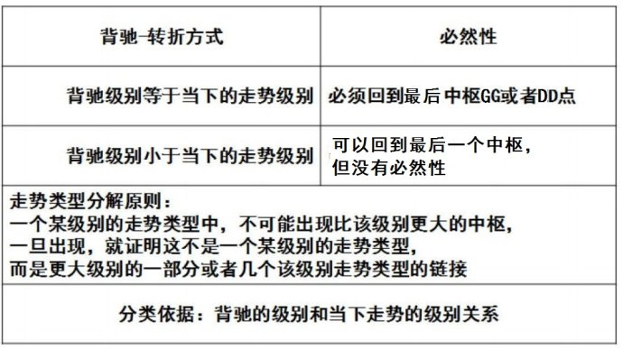
还是用上次的例子，【韶山映山红】“上次的例子”：“一个最简单的形式向上的a+A+b+B+c，A、B是30分钟中枢，在c中出现1分钟背驰，而c对b在30分钟级别并没有出现背驰，这时候并不必然保证c的1分钟转折的最终走势就一定不跌回B里，……必然要先形成一个比1分钟级别要大的中枢，然后向下突破，最终形成回跌到B中的走势。”】
【韶山映山红】当然可以是1分钟下跌趋势直接跌回B中，只不过，那样就不是小转大的回跌了。所以“必然要先形成一个比1分钟级别要大的中枢”，确定走势是大级别的下跌。】
【韶山映山红】“向上30分钟级别的a+A+b+B+c为例子，在c中出现一个1分钟级别背驰，不妨假设后面演化出一个30分钟中枢C，”“如果C和B没有任何重叠”，那就是原来的走势继续延伸；“如果C和B有重合”，那么（B+c+C）必然演化成一个日线中枢。这一课就说C和B没有重合的情况。】
向上30分钟级别的a+A+b+B+c，如果c是一个1分钟级别的背驰，最终引发下跌拉回B里，这时候，c里究竟发生了点什么事情？【韶山映山红】“c里究竟发生了点什么事情？”想弄明白小转大，就先要看清楚这个小级别转折是什么样子的，然后她的走势又是怎么样一步一步演变的。】
【韶山映山红】为什么说“最终引发下跌拉回B里”？不拉回B里就不算大级别转折吗？这个“拉回”的形态是什么样子的？以后研究。★不拉回B里也算大级别转折，只不过不是这里想讨论的情况。】
【韶山映山红】原文对小转大最形象的举例，就是这一句：“向上30分钟级别的a+A+b+B+c，如果c是一个1分钟级别的背驰，最终引发下跌拉回B里，”我们细细的分析这段话。
30分钟上涨趋势，c是5分钟的向上离开，其中包含了B的三买。
没有背驰，意味着两个中枢的趋势a+A+b+B+c，将延续成三个中枢的趋势a+A+b+B+c+C+d。
可惜，这时候，c里面某个5分钟中枢的1分钟离开段背驰了，然后以一个5分钟级别的走势回到中枢B。
注意，这种情况说的是c自己也没有5分钟级别的背驰，只是c的次级别1分钟走势的背驰。
这个c到底长什么样子？
最标准的走势，30分钟的B中枢有5分钟的离开段c1、返回段c2、再次离开段c3。
当然，可以继续有返回段c4、离开段c5……这样一直延续下去。只要这些5分钟走势不重叠成30分钟中枢，就还是5分钟的c。
这样有5段以上5分钟走势的c，属于线段类上涨趋势。只有3段5分钟走势的c，属于线段类盘整。
除了最标准的走势，B中枢的离开＼返回＼离开，某一段只是更低级别走势，甚至不存在。
我们做小转大的讨论，只琢磨最后的离开段是否低于5分钟级别的情况就好了。
按照最后的离开段的级别，完全分类包括两种：
1，最后的离开段c3是5分钟级别走势的情况。ｃ没有30分钟趋势背驰，离开段c3也没有线段类盘整背驰，c3最后一个5分钟中枢的1分钟离开发生1分钟背驰。
2，最后的离开段c3是低于5分钟级别的走势。比如这个例子里，c3是1分钟走势，那么，在这个1分钟的离开段c3之前，肯定有一个5分钟的回踩段c2，否则，这个1分钟离开段就还是更早的离开段c1的延伸了。也就是说，这种情况下，是c2最后一个5分钟中枢之后的1分钟反弹。
c已经有B的三买了。没有趋势背驰，意味着力度上的几种可能：c1>b，c>b，c3>c1。“在c中出现一个1分钟级别背驰”，这个1分钟走势必定被划分为c3的一部分，而且力度上c3>c1，否则就是c级别的线段类盘整背驰了。
不管怎么说，这个最后的1分钟走势是围绕c走势最后一个5分钟中枢的震荡。】
首先，c至少要包含一个5分钟的中枢，否则，中枢B就不可能完成，因为这样不可能形成一个第三类的买点。
【韶山映山红】如果c只有一个5分钟的中枢，中枢B有可能完成吗？ 如果是1分钟或1分钟以下级别离开，5分钟回踩形成三买，5分钟回踩是盘整走势，就只包含一个5分钟的中枢。 从另一个角度看，这种情况的5分钟回踩，和5分钟离开段的第一个中枢回踩中枢，有什么区别？分辨的界限是什么？可以做个专题，以后研究。】
【韶山映山红】只有一个5分钟中枢的情况下，这个中枢是什么样子的？静姐解读为5分上c1+5分下c2+5分上c3构成的c1c2c3类中枢。】
【韶山映山红】这里可以牵涉到第三类买卖点的离开段到底有没有讲究的问题。 37课，趋势背驰，“对c的内部进行分析，由于c包含B的第三类买卖点，则c至少包含两个次级别中枢，否则满足不了次级别离开后次级别回拉不重回中枢的条件。” 44课，小转大，“首先，c至少要包含一个5分钟的中枢，否则，中枢B就不可能完成，因为这样不可能形成一个第三类的买点。” 都是30分钟趋势，趋势背驰的c至少包含两个次级别中枢，小转大的c至少要包含一个5分钟的中枢，离开段、返回段、再次离开段，都是什么情况？这就值得去演绎了。】
【韶山映山红】这里主要是为了说明有5分钟中枢的存在，后面就可以“假设c`是c中最后一个5分钟的中枢”了、至于这个中枢是什么情况，最后一个中枢c`又是什么情况，可以是两件不相关的事。】
不妨假设c`是c中最后一个5分钟的中枢，
【韶山映山红】静姐解读c`为三买之后5分上c3里面的最后那个中枢。】
【韶山映山红】向上30分钟级别的趋势a+A+b+B+c，c包括B中枢的离开+返回+再次离开，其中返回必定是5分钟级别，那么c中最后一个5分钟的中枢c`不可能是第一次离开段的中枢。所以“c`是c中最后一个5分钟的中枢”，只有两种可能： １，第三类买点之后的再次离开是5分钟级别的向上离开段，其中最后一个回踩中枢就是c`，1分钟的顶背驰是c`中枢的离开段。 ２，第三类买点之后的再次离开不够5分钟的级别，形成第三类买点的5分钟级别的向下返回段里的最后一个中枢就是c`，之后的再次离开不够5分钟的级别，1分钟的顶背驰是c`中枢之后的向上转折离开段，还没有来得及形成5分钟级别走势就背驰转折了。这种情况下，c`可能已经有过第三类卖点，也可能没有。】
显然，这个1分钟的顶背驰，只能出现在c`之后，而这个顶背驰必然使得走势拉回c`里，【韶山映山红】离开5分钟中枢的1分钟走势的内部背驰，并不是“必然使得走势拉回c`里”。静姐也提到了这个问题，她解释这里是写错了，应该是5分钟背驰，就必然回中枢了。我觉得没有写错，就是1分钟背驰也没关系，虽然1分钟背驰不保证拉回c`，只不过，没有拉回c`里也就没有小转大了，这里说的不是“这个1分钟的顶背驰”之后的必然走势，而是发生小转大回到B中枢的情况下，“这时候，c里究竟发生了点什么事情？”这句话说的就是发生了“走势拉回c`里”，所以不算有问题。小转大的小，重点是小，是没有最低级别限制的。不同的解读，还需要继续。★以后研究。】
【韶山映山红】桃花博客：（此处有误，1分钟顶背驰只保证回拉最后一个一分中枢，不保证回拉5分钟最后一个中枢，只有5分钟背驰才能回拉到5分钟最后一个中枢c'内，这里是指30分钟走势不背驰，但5分和1分钟区间套背驰。）】
也就是说，整个运动，都可以看成了围绕c`的一个震荡，而这个震荡要出现大的向下变动，显然要出现c`的第三类卖点，【韶山映山红】这里说的“大的向下变动”不是我们平常理解的大幅度的变动，而是大级别的走势。】
【韶山映山红】为什么一定要出现c`的第三类卖点，然后才能出现大的向下变动？c`所在的5分钟走势没有背驰，不等于c`没有出过三买啊。没想明白。以后研究。★】
【韶山映山红】下图为桃花博客配图。】
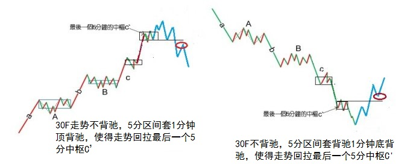
因此，对于那些小级别背驰后能在最后一个次级别中枢正常震荡的，都不可能转化成大级别的转折，【韶山映山红】小级别背驰之后，有小级别转折。在最后一个次级别中枢正常震荡，也就意味着，最后一个中枢的扩张升级，或者背驰之后没有走势的转折、而是形成更大级别的盘整。在大级别的角度看，只是大中枢的小级别震荡，或者是中枢扩张的一部分走势片段。】
【韶山映山红】a+A+b+B+c，c出现B的三买，c没有趋势背驰，c内部小级别背驰，并且小级别转折，c最后一个中枢出现三卖，然后开始小转大之旅。】
这个结论很重要，所以可以归纳成如下定理：
缠中说禅小背驰-大转折定理：小级别顶背驰引发大级别向下的必要条件是该级别走势的最后一个次级别中枢出现第三类卖点；小级别底背驰引发大级别向上的必要条件提是该级别走势的最后一个次级别中枢出现第三类买点。
【韶山映山红】这里的级别表述比较复杂。用本课上面说的30分钟a+A+b+B+c为例，“小级别背驰”是1分钟背驰，“大级别转折”是30分钟走势所关注的转折，“该级别走势”是30分钟，“最后一个次级别中枢”是5分钟离开段的中枢。翻译一下就是：1分钟背驰引发30分钟转折的必要条件是30分钟走势的最后一个5分钟中枢出现第三类买卖点。】
【韶山映山红】这条定理为什么分成向下、向上的两条来讲？为什么不是直接合并写成引发大级别转折？★因为这个买卖点的位置比较绕，合并了就说不清了。】
【韶山映山红】“小级别顶背驰引发大级别向下的必要条件是该级别走势的最后一个次级别中枢出现第三类卖点”。用30分钟a+A+b+B+c为例，三卖是谁的？c的最后一个中枢的。最后一个中枢是谁？既然是最后一个，就要先定义c的范围。B中枢的离开段开始，只要没有出现30分钟中枢，也没有返回到B中枢，所有的走势都属于c，除非能证明其中的一部分不属于c。小转大的分界点是确认了“大”之后才确认的，在这个确认之前，没有那个分界点。也就是说，这个三卖就是确认其中的一部分不属于c的。】
【韶山映山红】从另一个角度分析一下。小转大下跌的必要条件是三卖，也就是说，如果没有出三卖，就不算是小转大的下跌。这个三卖是引导下跌？还是证明转大了？应该是证明转大了。因为没有三卖也可以小级别形成相应的下跌。所以应该是新走势中枢的三卖，证明至少有个同级别的向下。 不是中阴中枢的三卖，因为，即使中阴中枢出三卖，依然可能只是线段类下跌，而没有这个大的走势。】
注意，关于这种情况，只有必要条件，而没有充分条件，也就是说不能有一个充分的判断使得一旦出现某种情况，就必然导致大级别的转折。
小级别顶背驰后，最后一个次级别中枢出现第三类卖点并不一定就必然导致大级别的转折，在上面的例子里，并不必然导致走势一定回到最后的该级别中枢B里。【韶山映山红】“只有必要条件，而没有充分条件，”也就是说，这个第三类买卖点并不能指导我们操作。那么，这个定理的意义是什么？有什么用？她的作用就是鉴定是否发生了小转大。如果没有第三类买卖点就一路下跌或者上涨，显然连一个次级别盘整都算不上，就只有次次级别以下的走势，也就还是小级别走势，不能称其为小转大了。★可以做个专题。以后研究。】
显然，这个定理比起“背驰级别等于当下的走势级别”必然回来最后一个该级别中枢的情况要弱一点，【韶山映山红】本级别背驰必回最后一个中枢，是大概率。小级别背驰，最后一个次级别中枢出现第三类买卖点，引发小转大的概率，就要小多了。 这个概率是从动力学的角度看。】但这是很正常的，因为这种情况毕竟少见点而且要复杂得多。【韶山映山红】复杂，依旧。少见，却不是。十年后的今天，已经比比皆是了。】
因此，在具体的操作中，必须有更复杂的程序来对付这种情况。而对于“背驰级别等于当下的走势级别”，如果你刚好是该级别为操作级别的，只要在顶背驰时直接全部卖出就可以。【韶山映山红】操作级别的背驰，直接买点买、卖点卖。小级别的背驰，需要逐步甄别了再应对。小转大的操作需要不见兔子不撒鹰，即使损失一部分收益。】
【韶山映山红】下面就是缠师说的“更复杂的程序”。】
对于“背驰级别小于当下的走势级别”的情况，为了简单起见，不妨还是用上面的为例子。
如果一个按30分钟级别操作的投资者，那么，对于一个5分钟的回调，是必然在其承受的范围之内，否则可以把操作的级别调到5分钟。【韶山映山红】缠论所说的回调都是不破坏形态的次级别向下的走势，而不是走势转折，所以要承受所有的5分钟的回调。】
那么，对于一个30分钟的走势类型，一个小于30分钟级别的顶背驰，必然首先至少要导致一个5分钟级别的向下走势，【韶山映山红】如果向下走势不够5分钟的级别，就属于“承受的范围之内”。这里看的是级别，而不是涨跌幅度。】如果这个向下走势并没有回到构成最后一个30分钟中枢的第三类买点那个5分钟向下走势类型的高点，那么这个向下走势就不必要理睬，因为走势在可接受的范围内。【韶山映山红】A6的内部小级别的顶背驰，必然首先至少要导致一个5分钟级别的A7，如果A7没有回到A5的高点，那么，在5分钟级别上，A4-A7属于线段类上涨趋势，对A7就不必要理睬。】
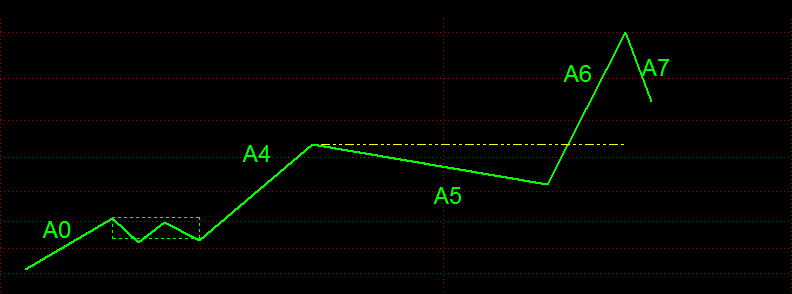
当然，在最强的走势下，这个5分钟的向下走势，甚至不会接触到包含最后一个30分钟中枢第三类买点那5分钟向上走势类型的最后一个5分钟中枢，这种情况就更无须理睬了。【韶山映山红】在最强的走势下，A7甚至不会接触到A6的最后一个5分钟中枢，也就是说，A7的5分钟中枢位置比A6最后一个5分钟中枢的位置还要高，构成上涨趋势的形态，这种情况就更无须理睬了。】
【韶山映山红】这里有个看似矛盾的地方：前面说，假设c`是c中最后一个5分钟的中枢，1分钟的顶背驰只能在c`之后，要出现c`的第三类卖点，然后是定理。这里说，在最强的走势下，这个5分钟的向下走势，甚至不会接触到最后一个5分钟中枢，也就是说，在c`的上面已经走出了小转大的5分钟走势。这种情况，三卖就不是c`的三卖了。这时候，A7已经是“5分钟的向下走势”，说明A7已经有5分钟中枢了，并且是回升中枢。“最强的情况”，“不会接触到”A6的“最后一个5分钟中枢”c`，说明一切都发生在A6的“最后一个5分钟中枢”c`之上，也就是说，那个第三类卖点不是A6的“最后一个5分钟中枢”c`的，而是小转大的A7的第一个中枢的。 ★】
【韶山映山红】这里为什么要说“包含”？怎么解读“包含最后一个30分钟中枢第三类买点那5分钟向上走势类型”？★以后研究。】
如果那向下的5分钟走势跌破构成最后一个30分钟中枢的第三类买点那个5分钟回试的5分钟走势类型的高点，那么，任何的向上回抽都必须先离开。【韶山映山红】A6没有本级别背驰，就不应该回跌。如果A7跌破A5的高点，说明小级别背驰引发的下跌已成事实，那么，A8将形成5分钟的二卖，所以要先离开。】
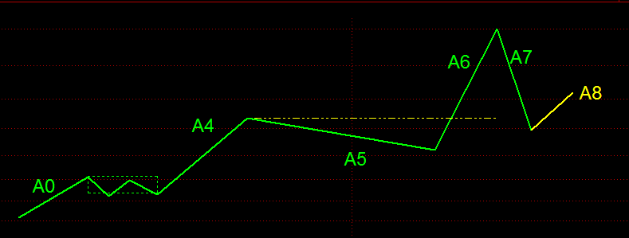
【韶山映山红】阿娇博客：（娇加：缠中说禅走势类型分解原则：一个某级别的走势类型中，不可能出现比该级别更大的中枢，一旦出现，就证明这不是一个某级别的走势类型，而是更大级别走势类型的一部分或几个该级别走势类型的连接。）】
【韶山映山红】阿娇博客：（娇注：跌破那个高点后会扩展成更大级别日中枢--进行时非完成时。根据定理，原30分走势类型结束，所以先离开。)】
【韶山映山红】下图为桃花博客配图。】
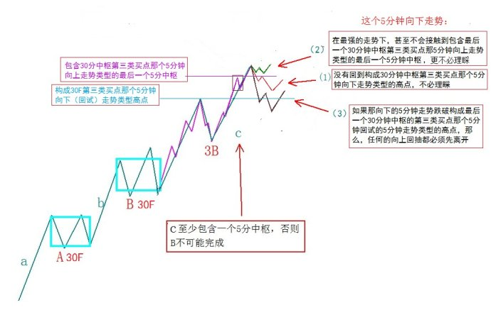
【韶山映山红】下图为桃花博客配图。】
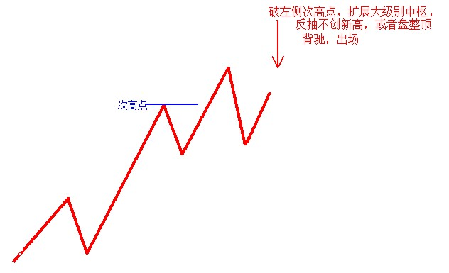
以上这种是全仓操作的处理方法，如果筹码较多，那么当包含最后一个30分钟中枢第三类买点那5分钟向上走势类型的最后一个5分钟中枢出现第三类卖点，就必须先出一部分，然后在出现上一段所说的情况时在出清。【韶山映山红】如果筹码较多，A6的最后一个5分钟中枢出现第三类卖点，就必须先出一部分，然后，在A7跌破A5高点之后，在A8出清。 这里说的是没有出现最强的走势，A7的5分钟中枢不在A6的最后一个5分钟中枢之上，而是先跌破A6的最后一个5分钟中枢，并且出现A6的最后一个5分钟中枢的三卖，这种情况就意味着已经转折了，所以先出一部分。这时候不出清，是因为三卖之后也可能形成中枢的扩展升级，还有转机的可能。而一旦跌破A5的高点，离开段的线段类走势就被破坏了，所以安排反弹盘背甚至不新高的情况下出清。】
当然，如果没有出现上一段所说的情况，就可以回补，权当弄了一个短差。【韶山映山红】如果筹码较多，A6的最后一个5分钟中枢出现第三类卖点，就必须先出一部分，然后，如果A7没有跌破A5的高点，就可以在A7的低点回补，权当弄了一个短差。 这里说的是仓位管理和打短差相结合的操作。这种情况下的三卖本不是打短差的卖点，前面应该已经卖过了，这个三卖出现时，该有仓位管理的动作，动用的是三买的时候介入的仓位。如果没有跌破A5高点，警报解除，就把这部分的仓位恢复。】

【韶山映山红】阿娇博客：（娇：线段背驰转5分级别看线段背驰点后1分下走势出现1分3卖先卖出一部分，然后看1分下走势完成时能否碰到前5分3买高点，不碰到买回。碰到后在随后的向上反抽中出清-----还原课文分段递归级别）】
【韶山映山红】下图为桃花博客配图。】
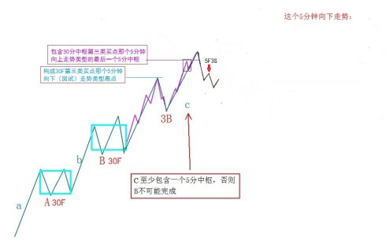
有人可能问，为什么那1分钟背驰的时候不出去，这是与你假定操作的级别相关的，而走势不能采取预测的办法，这是不可靠的，由于没有预测，所以不可能假定任何1分钟顶背驰都必然导致大级别的转折，其实这种情况并不常见，你不可能按30分钟操作，而一见到1分钟顶背驰就全部扔掉，这就变成按1分钟级别操作了。【韶山映山红】缠论不讲究在尖尖上逃顶、抄底。】
如果你的资金量与操作精度能按1分钟操作，那就没必要按30分钟操作，而按1分钟操作，操作的程序和按30分钟的是一样的，不过相应的级别不同而已。【韶山映山红】不管用什么级别操作，都有小转大的问题。】
当然，对于有一定量的资金来说，即使按30分钟操作，当见到1分钟的顶背驰时，也可以把部分筹码出掉，然后根据后面的回调走势情况决定回补还是继续出，这样的操作，对一定量的资金是唯一可行的，因为这种资金，不可能在任何一定级别的卖点都全仓卖掉。【韶山映山红】如果大资金都这样在很低级别的背驰段出手，那么势必会出现自我实现，甚至踩踏而雪崩。小散学缠论的人越来越多，一致性行为也会造成这种现象，可能这也是现在小转大越来越多的原因。】
至于底背驰的情况，将上面的反过来就可以。
【韶山映山红】阿娇博客：（ 娇：小转大实盘注意点 1 本级别或者次级别中枢反向突破；2 次级别中枢出现3买卖；3 本级别3买转2卖，3卖转2买；4 调整或者反抽的位置超过正常最后个次级别走势的的位置到达第二个中枢GGDD--形成同分3买卖的高低点从而扩展大中枢前走势类型结束。）】
【韶山映山红】阿娇博客：(娇注：小转大注意点1：小级别背驰引发大级别转折可以转2级，转3级，转4级.....原理相同。看被转折可能这个级别的次级别中枢有无出现3买卖，以及回调位置是否到次级别第二个中枢。比如1分背驰转5分级别就看最后个1分中枢的3买卖，1分背驰转30分级别就看最后个5分中枢的3买卖。 注意点2：这个该级别走势最后个次级别中枢是动态的，不一定为小级别背驰点前的中枢。 注意点3：本课文讲解为为1分钟背驰转30分钟级别转3级，43课举例601588为1分钟背驰转5分钟级别转2级------非分段后递归级别）】
【韶山映山红】下图是阿娇博客配图。】
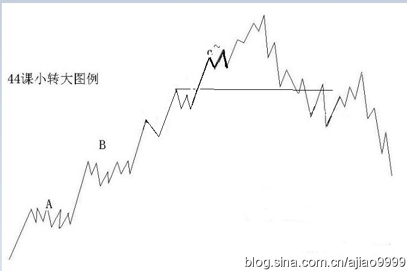
（待续）
昨天说了，由于中石化等业绩很好，大盘股是压不住了，那些说现在市赢率如何如何的人，算一下中石化现在是多少？且不说今年依然可以高速增长。其实探讨这些没什么意义，只是汉奸总是拿这些说事，不妨也说说。
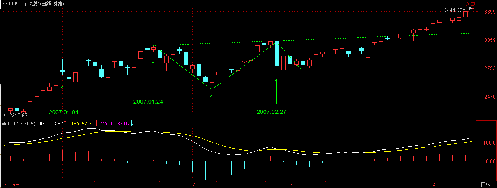
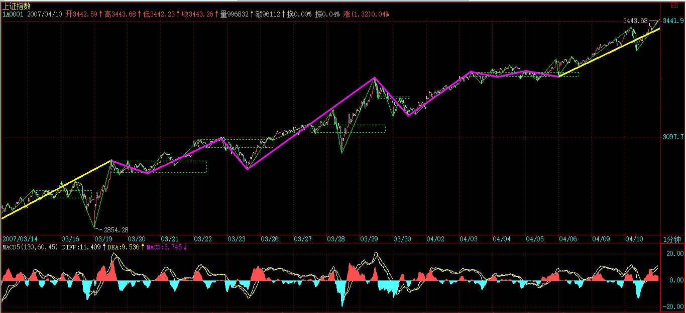
今天的震荡，就是对昨天缺口压力的一个反应，这在技术上很简单的情况，没什么特别的。
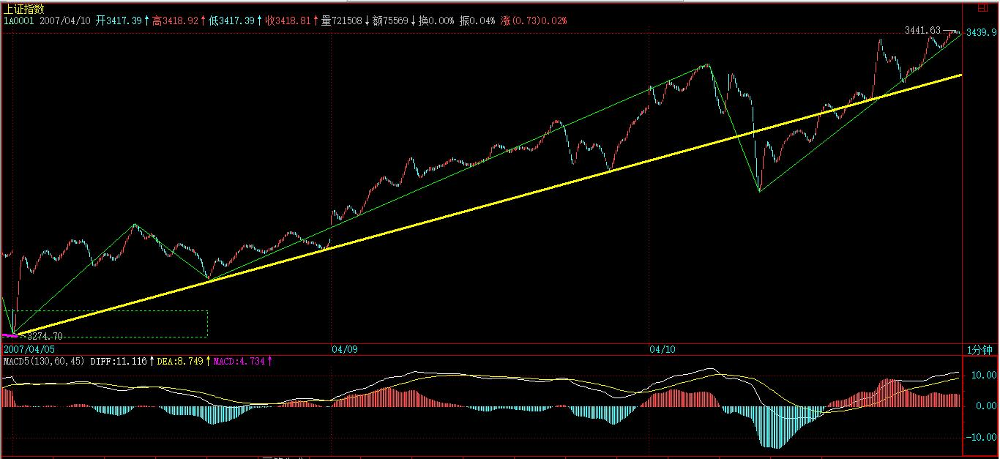
现在，以前说的深圳1万点已经在眼前，当然，现在主要考验管理层智慧的时候，一个连深圳1万点都接受不了的管理层，绝对是历史性的笑话，谁愿意当这个笑话的主角，请便。
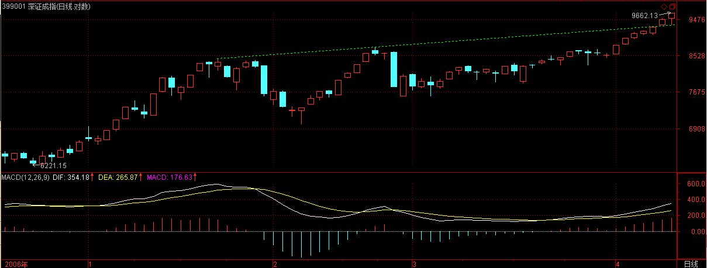
【韶山映山红】下图是阿娇博客配图。】
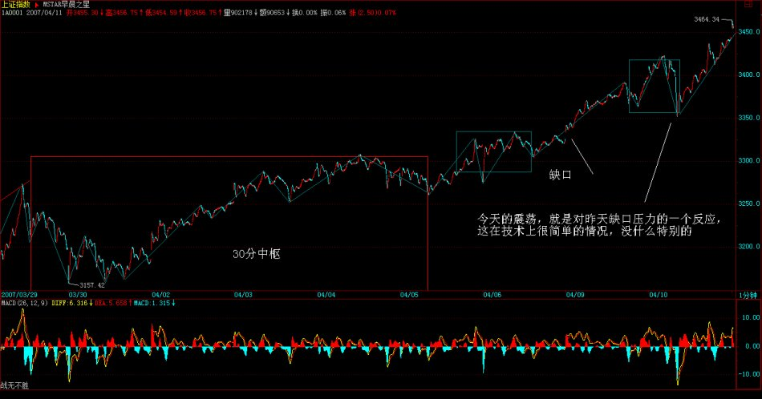
纯操作上，1根5日线，反复强调，看好这就足够了，至于那些喜欢测顶的人，从2000点就测到现在，劝一句，千万别玩期货，否则死都不知道怎么死的。
不过，即使在最有利于多头时，也绝对不能得意忘形，任何时候都不能追高，在这种走势中，如果技术不好，用均线控制持有，这是最简单且有效的办法。
如果要换股操作，一定要注意节奏，必须在某级别顶背驰抛了，然后盘中回跌确实站稳后再换，这样才风险小。一般情况下，技术不好的，最好别随便换股，轮动走势，只要是本ID反复强调的优质二线成分股以及那些业绩、送配优良的二线股票，肯定都会启动的。
2007-4-10 15:25
[匿名] 小丸子 2007-04-10 15:26:41
缠主，今天节奏全错了，802和600961被洗出来了，惭愧
【韶山映山红】000802北京旅游，2014.10.24变更为北京文化。】
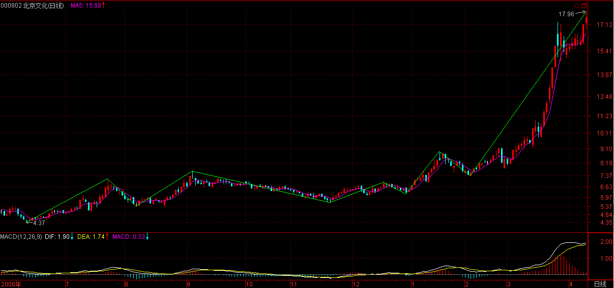
【韶山映山红】600961株冶集团。】
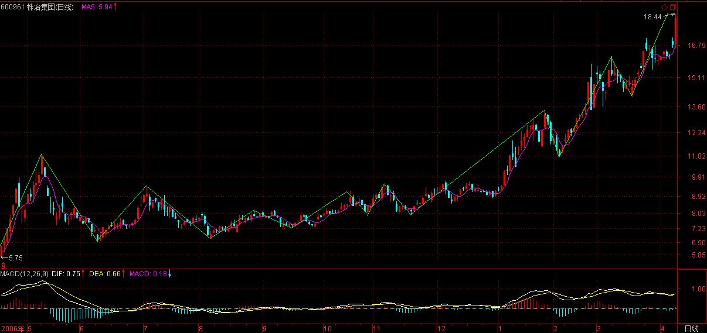
==
技术不好就看5日线，
如果是短线，就看60分钟的5均线，
【韶山映山红】阿娇博客：(娇注：5分图多空轴）】
【韶山映山红】桃花博客：(即：5分60单位均线，也就是macd的 0轴为多空分界线）】
这些线不破，根本不用理会。
2007-4-10 15:32
[匿名] dliss 2007-04-10 15:31:03
缠主说的太对了
我换股总是太差，现在回头一看，
现在和不换股的收益差不多，
还费力把火的浪费不少时间和精力
不过，不操作又不能长技术，和练心态
两难，两难
==
持有不是一种操作？持有不练心态？
2007-4-10 15:32
[匿名] 乐土 2007-04-10 15:32:55
很刺激的一天,满仓收益16%!哈哈.谢谢老师的提醒,有了心理准备.才敢于操作.
==
一定要自己真看明白图形，这样才是真工夫。
2007-4-10 15:33
[匿名] 缠心雕龙 2007-04-10 15:30:44
博主好，请教盘整背驰的问题：
三段走势“上下上”，设为A0A1A2，假如A0最短，A1最长，A2中等长度，且A2高点大于A0低点但低于A0高点，同时看MACD指标，A2的面积比A0大，这时能说A2对A0未盘背吗？
感觉A2回中枢的力度比A0离开中枢的力度要大得多，虽然A2没创新高，严格说这不能叫盘背吧？
==
这在中枢震荡那节里都有，请去看看。
2007-4-10 15:37
[匿名] 后知后觉 2007-04-10 15:34:34
禅主：
昨天最后的提问探讨，您没看到：大象按照各自的属相，分别过本命年。今天的走势似乎有些这样的意思。
感觉今天空方稍微有些技术含量，在时间上，节奏上控制的很到位，而多方反倒有些猴急。
现在散户心理浮躁，多方也有些急功近利。
问：1，联通是否可以挑逗了？
2，大象是否会真的分别过本命年？这样的剧本幼稚可笑吗？
谢谢了。
==
为什么跌就一定是空方弄出来的？多头就不可以洗盘？今天在石化出来前先跌，就是剧本里出彩的一笔，好好体会吧。【韶山映山红】600028中国石化。可以做个专题。以后研究。】
2007-4-10 15:41
[匿名] 新浪网友 2007-04-10 15:44:33
老师辛苦了 10.44元进的600782，希望老师帮我看一下。谢谢！
【韶山映山红】600782新钢股份。】
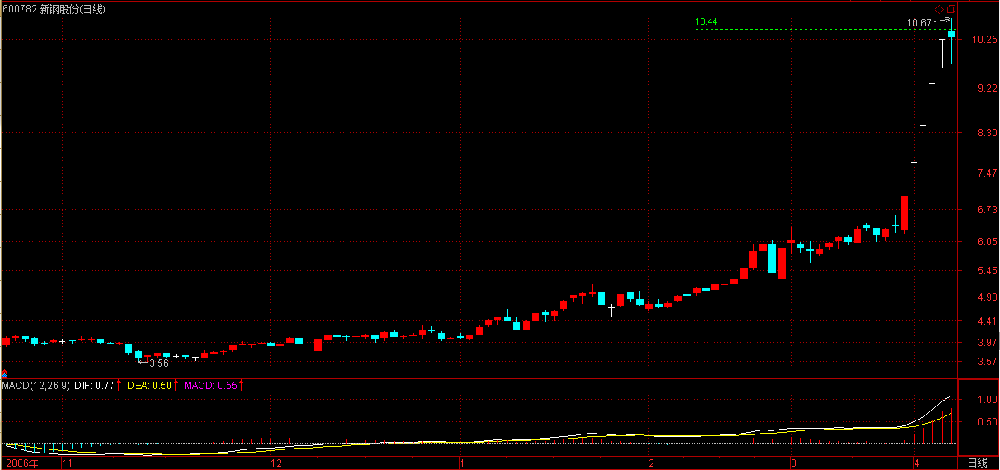
==
这种股票不是不可以玩，但如果你买了以后还要问的，证明你的技术还达不到玩这种股票的程度。所以最好别养成追高的坏毛病，这股票中线没什么大问题，短线涨太快，等均线上来。【韶山映山红】以后研究。】
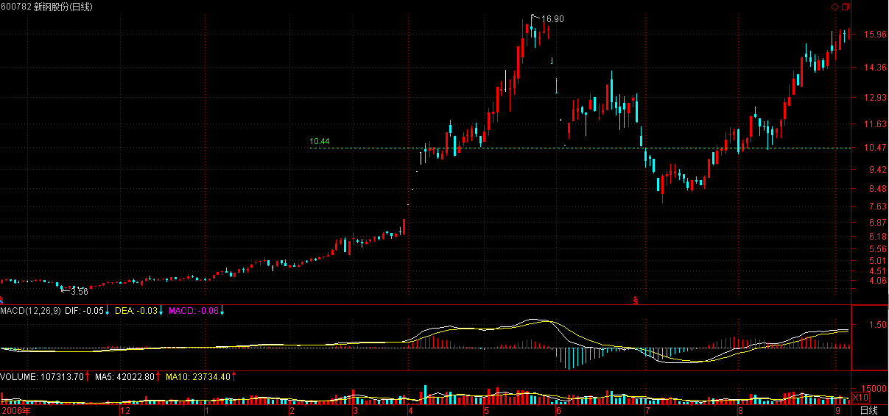
2007-4-10 15:51
太对不起了，马上要外出，晚上回来早，9点30左右再上来半小时。
先下，再见。
2007-4-10 15:54
十分抱歉，刚回来，太晚了，回答不了各位的问题，明天再说。
先下，再见。
2007-4-10 22:22
(2007-04-11 15:36:09)
有子曰：其为人也孝弟，而好犯上者，鲜矣；不好犯上，而好作乱者，未之有也。君子务本，本立而道生。孝弟也者，其为仁之本与！
杨伯峻：有子说：“他的为人，孝顺爹娘，敬爱兄长，却喜欢触犯上级，这种人是很少的；不喜欢触犯上级，却喜欢造反，这种人从来没有过。君子专心致力于基础工作，基础树立了，“道”就会产生。孝顺爹娘，敬爱兄长，这就是“仁”的基础吧！”
钱穆：有子说：“若其人是一个孝弟之人，而会存心喜好犯上的，那必很少了。若其人不喜好犯上，而好作乱的，就更不会有了。君子专力在事情的根本处，根本建立起，道就由此而生了。孝弟该是仁道的根本吧？”
李泽厚：有子说：“做人孝敬父母，尊爱兄长，而喜欢冒犯上级官长的，少有。不喜欢冒犯上级而喜欢造反作乱的，从来没有。君子在根本上下工夫，根本建立好了，人道也就生发出来。孝敬父母，尊爱兄长，就是人的根本吧？！”
详解：
前面一直说孔子的弟子们是如何对孔子进行歪曲，如何把自己的私货夹带到《论语》之中，其中最过分的就是这位“有子“了。
在《论语》中，孔子其他弟子都称呼名字，只有“有子”和“曾子”是被带上“子”的尊称，连颜回这孔子最出色的弟子，在《论语》中也没被称为“颜子”，这就很奇怪了。
最奇怪的是，在《论语》通常排序里，“有子”的第一条语录排在孔子最出名的三个“不亦”后面，等于在500多条语录中排名第二，是所有弟子里最早出现的，而“曾子”的第一条语录，被排在第四位，是所有弟子里第二出现的。现在，搜索排位还要付费，这“有子”与“曾子”，都是孔子晚年才收的弟子，有何德何能单独被尊称而且排位如此靠前，完全占据最好的广告位置，二千多年来，让如此多人看《论语》时，都被迫第一时间记住这两位，凭什么？
唯一合理的解释，现在流传的《论语》就是这两位的弟子合伙编辑的，其中大量夹带了他们的私货，这简直是中国文化史上最无耻的一笔。
本章，字面意思很简单，上面三位都解释了，大同小异，而最大的问题是，这“有子”说了那么多废话，其核心思想还是为了扼杀所有的“犯上作乱“者。儒学刚猛，充满反抗精神，竟然被这“有子”阉割成奴才玩意。
这人还特虚伪，最后所谓“孝弟也者，其为仁之本与！”，说的可不是“孝弟”，因为按照前面“其为人也孝弟，而好犯上者，鲜矣；不好犯上，而好作乱者，未之有也。”的逻辑，为什么强调、宣扬“孝弟”？就是因为“孝弟”了就不“犯上”，进而就不“作乱”。
按这种逻辑，并不是“孝弟”本身真被此人看重，而是宣扬“孝弟”导致的不“犯上作乱”结果符合了此人所代表的、害怕被“犯上作乱”的那一群人的利益。
而又是谁最怕“犯上作乱”呢？
此人所谓“君子务本，本立而道生”，完全与孔子的思想背道而驰，连“曾子”的所谓“一以贯之”都与孔子无关，这所谓的君子之本，不过是为了把其“孝弟”了就不“犯上”进而就不“作乱”的谎话说圆而编造的更大谎言。其中的逻辑关系无非是，你要成为君子，首先要有“君子之本”，有了“本”才有“道”生，而“孝弟”是“仁”道之本，君子都要遵守。
这样，通过伪造的所谓“君子之本”，“有子”就一步步将人引向永远无条件地不“犯上作乱”的真正陷阱，否则就是忘“本”了，然后就可以宣布此人违反“仁”道，就不是“人”，是“贼”是“寇”，然后就可以围而灭之，这样，这些害怕被“犯上作乱”的人，就可以永远继续为非作歹，鱼肉世界，这就是两千多年来的中国统治者看着“有子”、“曾子”们所夹带着私货编撰的《论语》就特别亲切的根本原因。
（待续）
前两天经常说中石化，就如同过年前经常说联通，后面经常说中行一般，由此，这剧本的有趣地方，应该有点感觉了。
汉奸原来不是很多工行要打压吗？那他们现在能对工行干点什么呢？把工行打压下5元？拉起来？现在中行已经成龙头了，看看两者的差价。
【韶山映山红】601398工商银行。】
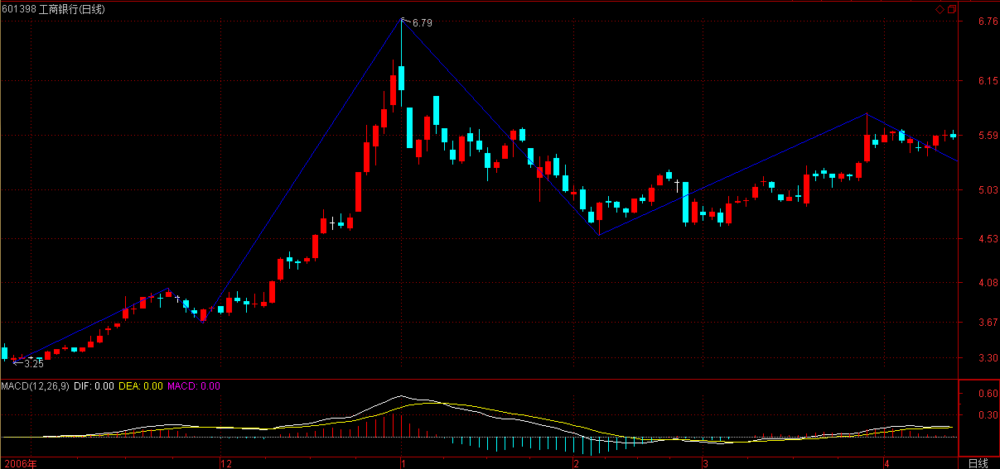
【韶山映山红】601988中国银行。】
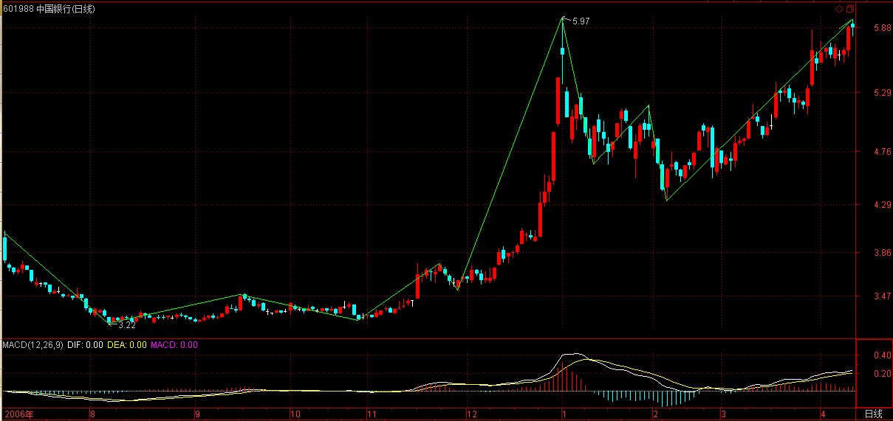
其实，现在大盘的走势，就是一个现场直播，就那几只大盘股票，对指数起着关键作用，如何应用，什么时候用什么，大家应该好好体会，从过年前开始，慢慢体会，这样会学到点东西。【韶山映山红】可以做个专题，以后研究。】
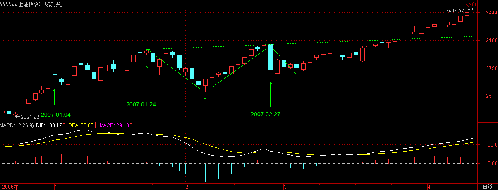
至于大盘，没什么可说的，测顶的人是最无耻的，按他们的预测，他们早就尸骨无存了，还好意思出来晃？顶是干出来的，而不是测出来的，连这个最简单的道理都不懂？还是那句话，看不明白的就看5日线，技术好的，可以充分利用震荡先卖后买打短差、换股，但绝对不能追高。
现在能打住大盘的，只能是管理层的大棒，否则，大盘将继续走到资金与筹码的能量平衡位置才能停下来休整，而这个位置是不可预测的，是干出来的。【韶山映山红】资金运动，筹码交换，资金与筹码的能量平衡位置。★可以做个专题，以后研究。】
心态不好、心脏不好的，就半仓，这样出现什么情况都好办了。
个股就不说了，反正都是以前说的，现在是瓜田李下，只干不说。
2007-4-11 15:38
[匿名] 新浪网友 2007-04-11 15:41:59
MM，607怎样，你说让大家去吸汉奸血，我买了。
==
买了就好，汉奸基金在13元附近加仓，没买的就算了，没必须追高为汉奸抬轿子。到时候上去后，找机会把汉奸折腾一把。
【韶山映山红】601607上海医药。】
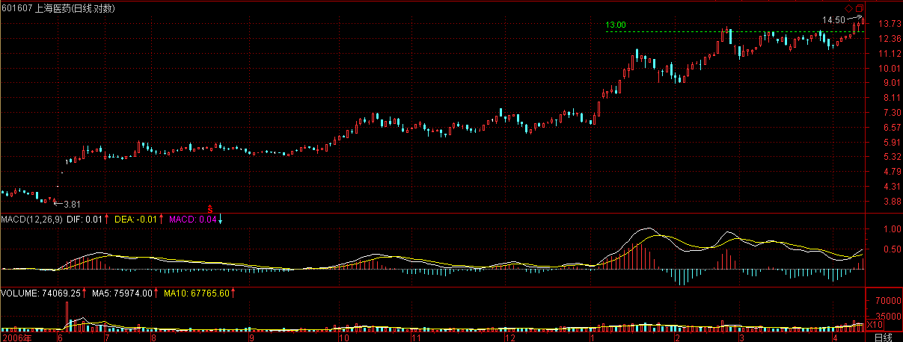
2007-4-11 15:48
[匿名] 乐土 2007-04-11 15:42:01
老师：您好！
一线蓝筹几乎同时被点燃，是否预示后几天将出现二八行情．两大银行正在做技术整理？
认真学习您给我们大家的论语.
==
你就当成板块轮动，指数看深圳就可以，上海可以参考。
注意，什么股票都不要追高。
2007-4-11 15:50
[匿名] 小八 2007-04-11 15:42:36
第一页，耶耶。老师好。
老师，正在学习实践同级别分解的机械买卖操作中，但是从３０分钟图来看，往往盘背在３０级别也是很难等的，因为ｍａｃｄ的参数是默认的。如果把它改成5.10.10那么感觉红绿柱子的显示要敏感一些，您看这个修改参数的做法可行吗？如果不可行您觉得用哪个比较合适呢？（我股龄不长，追随老师之中），望老师不吝赐教，谢谢！
==
30分钟等不到，就按5分钟来，想快还不简单？
不过，如果不熟练，别按太小级别的，一旦判断错误，改都改不过来。
2007-4-11 15:51
[匿名] 小丸子 2007-04-11 15:51:36
今天倒是能准确判断下跌，也能准确判断上涨，但是没能心到手到，看来这个过程还要练习，就是太贪心了，几只股票都想买，又没那么多银子，好不容易决定买其中一只，收盘发现没买的都涨停了，而买了的却没怎么涨。
==
先保证操作正确，再保证结果更好，这是两个层次的东西，没有第一层次，后面是没意义的。
而要保证操作正确，最好就是一心一意，选好一定的股票，反复操作，如果你把所有该级别的震荡都基本把握，其实效率并不低。
2007-4-11 15:54
[匿名] hehe2 2007-04-11 15:43:11
BLOG主,今天基本把握主下跌了.
不过就是老是没有跌完就进去. 这个是个教训, 我要记住!
==
先有节奏感，再完善准确率。
2007-4-11 15:56
[匿名] 百思不解 2007-04-11 15:44:44
楼主好！44课里小级别背驰引发大级别转折，文中举例如下：
“向上30分钟级别的a+A+b+B+c，如果c是一个1分钟级别的背驰，最终引发下跌拉回B里”。
请问，c如果发生一个5分钟级别背驰（但c对b不背驰），最终引发下跌拉回B里，这种情况和上面例子在分析上有什么不同呢？或者说，这种情况和a+A+b+B+c发生30分钟背驰而必然拉回到B里有什么区别呢？
==
这没什么不同，即使是1分钟以下背驰，道理也是一样的。【韶山映山红】c对b背驰，才有本级别背驰。否则，不管背驰的是什么级别，都是小转大。】
那1分钟背驰只是一种举例，并不是说一定要是1分钟背驰。
【韶山映山红】阿娇博客：（注：缠中说禅走势类型分解原则：一个某级别的走势类型中，不可能出现比该级别更大的中枢，一旦出现，就证明这不是一个某级别的走势类型，而是更大级别走势类型的一部分或几个该级别走势类型的连接。小级别背驰后回跌，一旦碰到包含大级别中枢3买的的GG,同级别分解的角度，中枢就要扩展，原走势结束，必须先离开）】
2007-4-11 15:59
[匿名] 水房姑娘 2007-04-11 15:45:05
ＭＭ，我感觉游资有争分夺秒赶顶的劲头啊。
==
就算指数见顶也没什么大不了的，1月4日那次不也见了，后来指数不动，很多个股继续翻番，有本ID这样的人在，一有机会自然到处点火，还怕市场没机会？
2007-4-11 16:02
[匿名] 缠心雕龙 2007-04-10 15:30:44
博主好，请教盘整背驰的问题：
三段走势“上下上”，设为A0A1A2，假如A0最短，A1最长，A2中等长度，且A2高点大于A0低点但低于A0高点，同时看MACD指标，A2的面积比A0大，这时能说A2对A0未盘背吗？
感觉A2回中枢的力度比A0离开中枢的力度要大得多，虽然A2没创新高，严格说这不能叫盘背吧？
==
缠中说禅 2007-04-10 15:37:11
这在中枢震荡那节里都有，请去看看。
－－－－－－－－
[匿名] 缠心雕龙 2007-04-11 15:48:27
不好意思，我理解中枢震荡那节内容，觉得上述情况就是“未盘背”，因为A2力度大于A0嘛。但好多同学说没创新高，那就是“盘背”。希望博主明确一下。
==
创新高或新低才有背驰或盘整背驰的可能。
未创新高的情况，其实可以按中枢震荡的方式去看，等于达不到上次震荡的力度，也可以用MACD等辅助看，但和背驰不是同一样东西，这在关于中枢震荡的力度判断那一课里里都有的。
2007-4-11 16:12
[匿名] 幼稚园 2007-04-11 16:10:58
缠姐，昨天加仓了600598北大荒，按日线级别操作的。今天有所表现，能帮我看一下我分析的正确吗？
==
这种图形是不会有日线级别买点的，小级别当然有。
【韶山映山红】600598北大荒。】
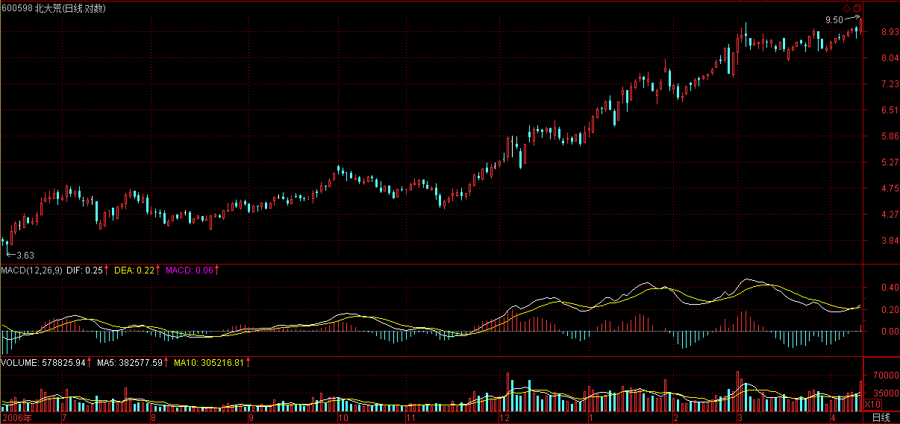
做对了，有可能是碰对了，所以要把问题搞清楚。
2007-4-11 16:13
[匿名] touchnet 2007-04-11 15:49:04
关于背驰后最后中枢扩展的情况，向老大请教：
对于向上30分钟级别的a+A+b+B+c，如果b、c背驰，不妨设背驰后5分钟走势段依次为C1,C2,C3,C4,C5等等，其中奇数段向下，偶数段向上。则必有以下结论：
1、min(C1)<=GG(B)
-------
第一段折返就必须与B的GG有重叠部分。
【韶山映山红】阿娇博客：（娇注：不一定）】
2、min(C3)<=max(C1)
--------
否则，将形成一个与B完全不重叠的C，与背驰后结束该走势矛盾。
【韶山映山红】阿娇博客：（娇注：不对）】
3、min(C5)<ZG(C),其中C为C1,C2,C3形成的30分钟级别的中枢。
--------
否则C5形成C的三买，此时C已结束，对于中枢扩展来说，B,C如果要扩展成日线中枢，根据中枢定义，至少要9段5分钟走势才能形成日线级别的中枢，此时，B中若只有三段次级走势，则目前B,C,再加上c，总共只有七段，所以C5只能走C的延伸段，这样加上C4,C5，就有9段了。
==
首先，你这些结论都有一个前提，就是背驰的级别是30分钟的，否则，一个小级别背驰，完全可以不这样走。
至于后面的分析，有些细节不太对，因为后面的课程就会说到，请等明天。
2007-4-11 16:22
匿名] 白玉兰 2007-04-11 15:50:15
妹妹好！
最近只是二线优质或成分股的天下，是不是象915这样的（定义为三线股？）即使有题材的也处于休眠中？
＋＋＋＋＋＋＋＋＋＋＋＋
[匿名] 白玉兰 2007-04-11 16:17:29
妹妹别不理我？如果我问错了，就不要回答了。
==
对不起，问题太多，没看到。
这前段时间说过，二线要先腾出空间，三线才能继续，中线没有任何问题。所以一定要踏准板块轮动的节奏，但如果没跟上，也没必要跟了，等待也是一种操作。
2007-4-11 16:27
[匿名] asdf 2007-04-11 15:52:31
女王，对各个级别的中枢分辨还是糊涂啊？
譬如连续10天涨停， 又连续5天跌停， 又连续10天涨停，又连续5天跌停，没有一个日线中枢，这样构不构成周线中枢啊？是不是周线中枢形成前一定要形成日线级别上的3段走势？ 可不可以是30分钟级别上的？
==
中枢级别和幅度没有必然的关系。【韶山映山红】中枢级别和幅度没有必然的关系。也就是说，可能小级别大幅度，也可能大级别小幅度。级别是形态学的分析，与动力学没有必然的关系。级别的增长，是哪一种能量的积蓄，又是哪一种能量的消耗，这是缠论没有讲清楚的问题。可以做个专题，以后研究。】
没有日线3段，怎么会有周线中枢？如果是30分钟，就至少要9段，那也自然形成3段日线的。【韶山映山红】周线中枢需要有日线3段，也可以是30分钟的9段。这里说的是，一个走势类型，可以是图形上复杂的一段，也可以是相对简单的三段。】
2007-4-11 16:30
[匿名] II 2007-04-11 16:27:07
博主，这个问题回答下吧。谢谢！~~~~~~~~~~~~~~~~~~
老大,那你不管999了吗.它这几天不太好噢.
==
这种问题毫无意义，什么叫管？难道天天涨才是管？股票是有节奏的，你看600497去年6月份时盘了多长时间。
【韶山映山红】600497驰宏锌锗】
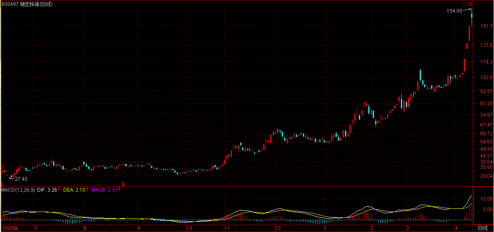
对于散户，根本没必要专门弄一只股票，热点在哪里就去哪里，【韶山映山红】散户资金量小，进出容易，就可以不断的追逐短线机会，提高资金使用率。】优质二线股，全市场本ID第一个把剧本告诉大家，怎么不去关心？【韶山映山红】１，优质。保证安全。 ２，二线股，比一线大蓝筹更有活跃性。】
至于999，本ID只知道，万科也是华润的。
【韶山映山红】000999三九医药，2010.02.24变更为华润三九。】
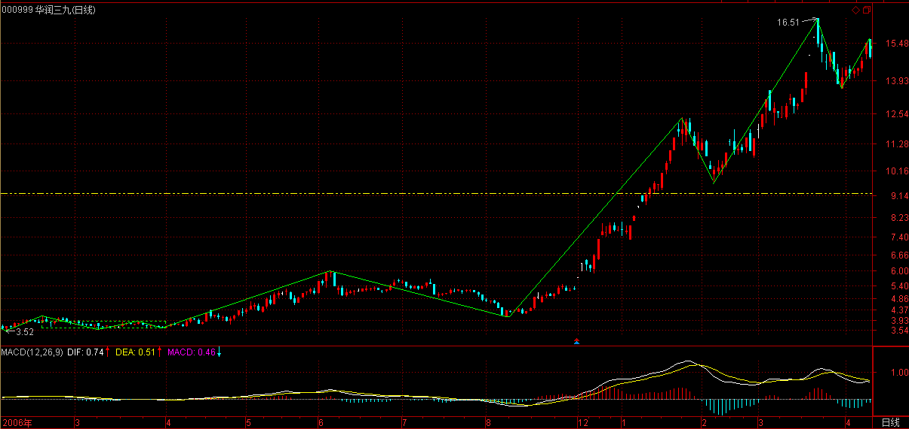
2007-4-11 16:38
[匿名] 麒麟 2007-04-11 16:02:53
妹妹,你资金量这么大,干出顶后怎么出货啊?用不用事先~~~
另我按妹妹提示的大方向买的000912,怎么不涨啊?
谢谢妹妹!好几天都没回答俺的问题了
==
为什么要出货，20年的大牛市，出了货去哪里买回来？【韶山映山红】大资金不能满仓倒腾，所以不能出货，只是分仓打短差。】
先把这牛市的性质搞清楚。一个20倍市赢率的股票，过三个月以后再问这个问题，看在什么位置。
市场只会给耐心者以回报。
2007-4-11 16:47
[匿名] asdf 2007-04-11 15:52:31
女王，对各个级别的中枢分辨还是糊涂啊？
譬如连续10天涨停， 又连续5天跌停， 又连续10天涨停，又连续5天跌停，没有一个日线中枢，这样构不构成周线中枢啊？
是不是周线中枢形成前一定要形成日线级别上的3段走势？ 可不可以是30分钟级别上的？
==
缠中说禅 2007-04-11 16:30:32
中枢级别和幅度没有必然的关系。没有日线3段，怎么会有周线中枢？如果是30分钟，就至少要9段，那也自然形成3段日线的。
-------------
[匿名] asdf 2007-04-11 16:39:23
但是这种情况，周线图上有“下上下”三段了。如果这样的话，就是某级别图上的3段重叠不一定构成中枢了， 依次推下去，每个级别图都不一定， 实际上看到的中枢不一定是中枢了。这个看图判断中枢有点不确定性啊
==
不是随意三段就可以，是三段次级别，你在次级别上没有中枢，那当然不是，谁告诉你看到“上下上”就是中枢的？【韶山映山红】不是图上的随意三段下上下的波动就可以，要三段走势都是次级别走势类型才行。怎么知道是不是次级别走势类型呢？这里说了简单的判别依据，就是看那一段走势有没有次级别中枢。连续的涨停，没有日线中枢，也就不是日线级别的走势，也就不能构成周线中枢。 这时候还没有笔、线段的初始化，还是早期的3K中枢初始化，在次级别上有没有中枢，就是看有没有这样的3K中枢。这个时候的级别，和笔中枢的级别比较接近。】
而且前面说过，最准确的中枢分析，应该从分笔开始，逐步扩上去，【韶山映山红】在本级别K线图上看次级别的走势类型，不是一种必然。要想准确，还是需要从小级别开始递归。级别不断小下去，就会追溯到从分笔开始。】
【韶山映山红】从递归的角度看，如何判断次级别上有没有中枢，就要看有没有次次级别的三段重叠。如果只有一张Ｋ线图，要这样去看走势，也就意味着，要在图上建立起共存的三个级别来。缠论后期课程推出的笔、线段、中枢，就是这样的思路。笔对应次次级别，线段对应次级别走势类型，线段中枢对应本级别中枢。 至于次次级别的每一段是否还符合要求，往往并不去计较了，因为可以把她视为最低级别。就像后期的笔，并不去计较她是否还有更低级别。】
但这样太麻烦，所以就可以用1分钟之类的代替，实际效果是一样的。【韶山映山红】不做逐级递归，问题也不是很大，因为“实际效果是一样的”，毕竟分析只是预判，配套的应对体系是完整的，就可以做到模糊的正确。】
2007-4-11 16:51
[匿名] 后知后觉 2007-04-11 16:50:20
感谢禅主，我再复制一遍（已经复制5遍了）：
大象轮番出场，联通如约挪步，他们按照各自的生肖，在给源源不断进入股市的新人表演。于是新股民真的骑龙、骑马、骑老虎，很多老股民骑熊、骑鼠、骑猪屁股。 演绎再演绎，也让吃惯了西餐的人慢慢开始感觉到了豆汁儿、焦圈儿、臭豆腐的魅力。一些骑墙头的，也在慢慢加入进来。
至于工行那辆化油器不适应中国汽油、轮胎不适应平安大道的车，可能是这样的，他们自己打火挪几步，那些骑墙头上的人再去推他们几步，这样苟延残喘，也算不丢人，总算适应了咱们的国情了。
帮助：今天搞了点石头记的药。还盯了一个股，也让群里同学注意了，可发现那里的庄家在大笔卖出。莫非他们要去推工行？哈哈，不得而知了。
请老大帮助分析一下600327，盘面内、外的东西都行。
【韶山映山红】600327大东方。】

==
一个股票从一位数变成两位数，有一个大的震荡，是最正常不过了。【韶山映山红】整数关口的突破效应。】
2007-4-11 16:54
[匿名] 戈石 2007-04-11 16:40:32
尊女王：
今天这一讲之后，我感觉《论语》已经讲完了。除了“学而时习之，不同不相，不知不愠，不患而患，食谋道谋”，没有多少是孔子自己的了，是吗？
==
子曰的，基本都是，怎么会没有？只是夹带了很多其弟子的语录，和孔子的是不搭界的。
2007-4-11 16:56
对不起，5点了，6点半前要到某条街道，晚上上不来了。
先下，明天再见。
2007-4-11 17:02
本课目录
教你炒股票44：小级别背驰引发大级别转折《论语》详解：给所有曲解孔子的人（63）有子曰：其为人也孝弟，而好犯上者，鲜矣；不好犯上，而好作乱者，未之有也。君子务本，本立而道生。孝弟也者，其为仁之本与！